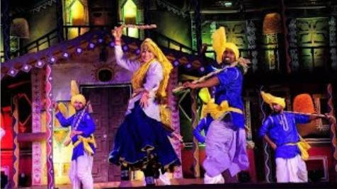

1) History
Phag dance is celebrated primarily in the months of February and March. These months fall in Falgun month in the Hindu calendar, which has lent its name to the dance. The name Falgun became Faag or Phag in common people’s tongues.
2) Origin
This folk dance is performed by the agricultural community of Haryana.
3) Significance
During February and March there is a bit of leisure time for the folks, between the sowing and harvesting period. This dance celebrates the harvest of the farmers and is essentially an expression of joy and bliss.
4) Costume
There are no special costumes for the Phag dance. As this dance is performed by village people, they wear their daily clothing. If this dance is being performed on a special occasion, then both men and women wear colorful garments. Women wear ghagra-choli with dupatta and men wear colorful Pagdi (turban).
